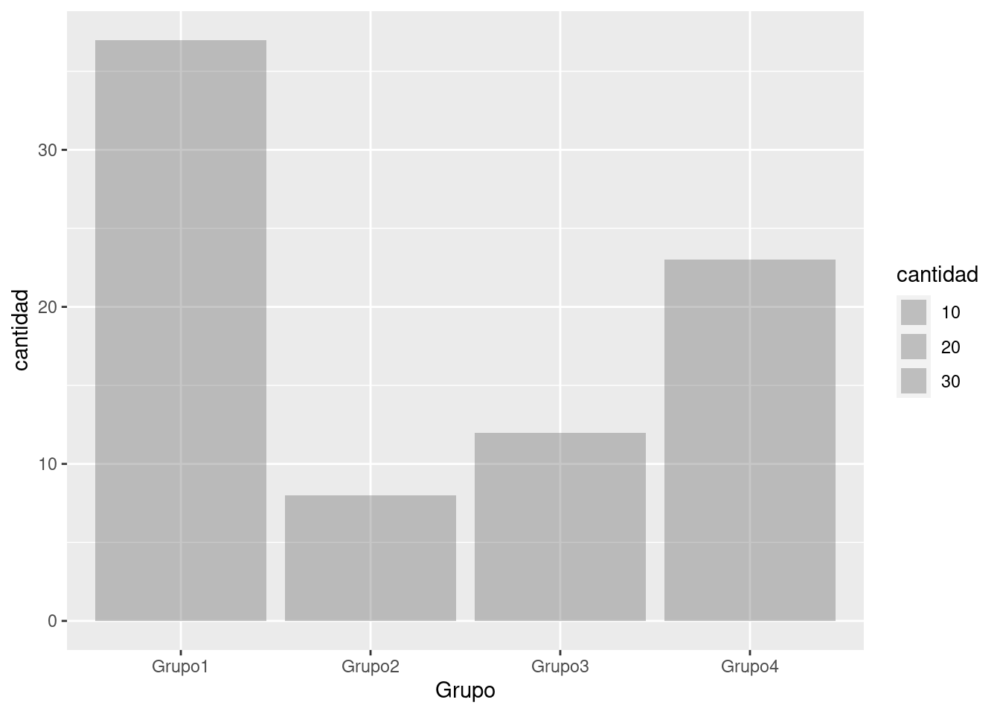

Code
install.packages("tidyverse")Esta sección muestra el ecosistema tidyverse, compuesto de un conjunto de paquetes que comparten una filosofía común de programación de datos y R, y están diseñados para trabajar juntos de forma natural.
Puedes instalar tidyverse completo con una sola línea de código:
install.packages("tidyverse")En su computadora, escriba esta línea de código y ejecutelo. R descargará los paquetes de CRAN y los instalará en su computadora.
library(tidyverse)Esto le indica que tidyverse está cargando los paquetes ggplot2, tibble, tidyr, readr, purrr y dplyr. Estos consideran los núcleo del tidyverse porque los usará en casi todos los análisis.
Los paquetes del tidyverse cambian con bastante frecuencia. Puede ver si hay actualizaciones disponibles y, opcionalmente, instalarlas, ejecutando tidyverse_update().
Toma nota del mensaje de conflictos que se imprime cuando cargas el tidyverse. Te dice que dplyr sobrescribe algunas funciones en base R. Si desea usar la versión base de estas funciones después de cargar dplyr, deberá usar sus nombres completos: stats::filter() y stats::lag()
La visualización es una herramienta importante para la generación de información, pero es raro obtener los datos exactamente como se necesitan. A menudo, necesitará crear algunas variables o resúmenes nuevos, o tal vez solo desee cambiar el nombre de las variables o reordenar las observaciones para que sea un poco más fácil trabajar con los datos. Para más detalles sobre cómo transformar sus datos es empleando el paquete dplyr
Para explorar los verbos básicos de manipulación de datos de dplyr, usaremos la base de datos de zonas de amortiguamiento. Este marco de datos contiene. Los datos provienen de la Servicio Nacional de Áreas Naturales Protegidas (SERNANP)
# datos será un 'data frame'
z_amortiguamiento <- read_csv(file = 'data/zon_amortiguamiento.csv')New names:
Rows: 80 Columns: 11
── Column specification
──────────────────────────────────────────────────────── Delimiter: "," chr
(6): Codigo, Area_natur, Periodo, Base_legal, Base_leg00, Base_leg01 dbl (2):
...1, Superficie date (3): Fecha_lega, Fecha_le00, Fecha_le01
ℹ Use `spec()` to retrieve the full column specification for this data. ℹ
Specify the column types or set `show_col_types = FALSE` to quiet this message.
• `` -> `...1`head(z_amortiguamiento)# A tibble: 6 × 11
...1 Codigo Area_natur Periodo Base_legal Fecha_lega Base_leg00 Fecha_le00
<dbl> <chr> <chr> <chr> <chr> <date> <chr> <date>
1 1 RC04 Ashaninka 2019-2… R.P. Nº 2… 2012-12-28 <NA> 1899-12-30
2 2 BP03 de Pui Pui 2019-2… R.J. Nº 2… 2008-10-28 <NA> 1899-12-30
3 3 RN12 Matsés 2023-2… R.P. Nº 0… 2014-02-27 <NA> 1899-12-30
4 4 RN10 Allpahuayo M… 2022-2… R.J. Nº 1… 2007-07-24 <NA> 1899-12-30
5 5 RN06 de Salinas y… 2016-2… R.J. Nº 0… 2007-04-26 <NA> 1899-12-30
6 6 RN02 de Junín 2008-2… R.J. Nº 1… 2008-06-03 <NA> 1899-12-30
# ℹ 3 more variables: Base_leg01 <chr>, Fecha_le01 <date>, Superficie <dbl>En esta sección se muestran cinco funciones clave de dplyr que le permiten resolver la gran mayoría de sus desafíos de manipulación de datos:
filter()).arrange()).select()).mutate()).summarize())Todos estos se pueden usar junto con group_by(), que cambia el alcance de cada función de operar en todo el conjunto de datos a operar en él grupo por grupo. Estas seis funciones proporcionan los verbos para un lenguaje de manipulación de datos.
Todos los verbos funcionan de manera similar:
Juntas, estas propiedades hacen que sea fácil encadenar varios pasos simples para lograr un resultado complejo. Profundicemos y veamos cómo funcionan estos verbos.

Filter() te permite filtrar un subconjunto de observaciones según sus valores. El primer argumento es el nombre del data frame. El segundo y los siguientes argumentos son las expresiones que lo filtran.
Por ejemplo, podemos seleccionar todas las ZA con una Superficie mayor a 400000.00 con:
dplyr::filter(z_amortiguamiento, Superficie > 400000.00 )# A tibble: 7 × 11
...1 Codigo Area_natur Periodo Base_legal Fecha_lega Base_leg00 Fecha_le00
<dbl> <chr> <chr> <chr> <chr> <date> <chr> <date>
1 18 PN09 Cordillera A… 2017-2… R.P. Nº 0… 2011-04-14 <NA> 1899-12-30
2 30 PN06 del Río Abis… 2014-2… R.J. Nº 2… 2006-09-27 <NA> 1899-12-30
3 42 RN08 Pacaya-Samir… 2017-2… R.J. Nº 1… 2009-09-24 <NA> 1899-12-30
4 51 RC02 El Sira 2015-2… R.P. Nº 0… 2009-02-27 <NA> 1899-12-30
5 60 RP02 Subcuenca de… 2019-2… R.P. Nº 1… 2009-09-15 <NA> 1899-12-30
6 66 PN11 Alto Purús 2019-2… R.P. Nº 2… 2012-12-28 <NA> 1899-12-30
7 67 PN11 Alto Purús 2019-2… R.P. Nº 2… 2012-12-28 <NA> 1899-12-30
# ℹ 3 more variables: Base_leg01 <chr>, Fecha_le01 <date>, Superficie <dbl>Cuando ejecutas esa línea de código, dplyr ejecuta la operación de filtrado y devuelve un nuevo data frame. Las funciones de dplyr nunca modifican su input, por lo que si deseas guardar el resultado, necesitarás usar el operador de asignación, <-:
filter01 <- dplyr::filter(z_amortiguamiento,Superficie > 400000.00 )De otro modo usar el operador “%>%” de la librería magrittr.
R imprime los resultados o los guarda en una variable. Si desea hacer ambas cosas, puede envolver la tarea entre paréntesis:
(filter02 <- dplyr::filter(z_amortiguamiento,Superficie > 400000.00))# A tibble: 7 × 11
...1 Codigo Area_natur Periodo Base_legal Fecha_lega Base_leg00 Fecha_le00
<dbl> <chr> <chr> <chr> <chr> <date> <chr> <date>
1 18 PN09 Cordillera A… 2017-2… R.P. Nº 0… 2011-04-14 <NA> 1899-12-30
2 30 PN06 del Río Abis… 2014-2… R.J. Nº 2… 2006-09-27 <NA> 1899-12-30
3 42 RN08 Pacaya-Samir… 2017-2… R.J. Nº 1… 2009-09-24 <NA> 1899-12-30
4 51 RC02 El Sira 2015-2… R.P. Nº 0… 2009-02-27 <NA> 1899-12-30
5 60 RP02 Subcuenca de… 2019-2… R.P. Nº 1… 2009-09-15 <NA> 1899-12-30
6 66 PN11 Alto Purús 2019-2… R.P. Nº 2… 2012-12-28 <NA> 1899-12-30
7 67 PN11 Alto Purús 2019-2… R.P. Nº 2… 2012-12-28 <NA> 1899-12-30
# ℹ 3 more variables: Base_leg01 <chr>, Fecha_le01 <date>, Superficie <dbl>Para usar el filtrado de manera efectiva, debes saber cómo seleccionar las observaciones que deseas utilizando los operadores de comparación. R proporciona el conjunto estándar: >, >=, <, <=, != (no igual) y == (igual).
Cuando comienzas con R, el error más fácil de cometer es usar = en lugar de == cuando se busca igualdad. Cuando esto suceda, obtendrás un error informativo:
dplyr::filter(z_amortiguamiento,Superficie > 400000.00)# A tibble: 7 × 11
...1 Codigo Area_natur Periodo Base_legal Fecha_lega Base_leg00 Fecha_le00
<dbl> <chr> <chr> <chr> <chr> <date> <chr> <date>
1 18 PN09 Cordillera A… 2017-2… R.P. Nº 0… 2011-04-14 <NA> 1899-12-30
2 30 PN06 del Río Abis… 2014-2… R.J. Nº 2… 2006-09-27 <NA> 1899-12-30
3 42 RN08 Pacaya-Samir… 2017-2… R.J. Nº 1… 2009-09-24 <NA> 1899-12-30
4 51 RC02 El Sira 2015-2… R.P. Nº 0… 2009-02-27 <NA> 1899-12-30
5 60 RP02 Subcuenca de… 2019-2… R.P. Nº 1… 2009-09-15 <NA> 1899-12-30
6 66 PN11 Alto Purús 2019-2… R.P. Nº 2… 2012-12-28 <NA> 1899-12-30
7 67 PN11 Alto Purús 2019-2… R.P. Nº 2… 2012-12-28 <NA> 1899-12-30
# ℹ 3 more variables: Base_leg01 <chr>, Fecha_le01 <date>, Superficie <dbl>Hay otro problema común que puedes encontrar al usar ==: los números de coma flotante. ¡Estos resultados pueden sorprenderte!
sqrt(2)^2 == 2[1] FALSE1 / 49 * 49 == 1[1] FALSELas computadoras usan aritmética de precisión finita (obviamente, NO pueden almacenar una cantidad infinita de dígitos), así que recuerda que cada número que observas es una aproximación. En lugar de confiar en ==, usa near() (cercano, en inglés):
near(sqrt(2)^2, 2)[1] TRUEnear(1 / 49 * 49, 1)[1] TRUESi tienes múltiples argumentos para filter() estos se combinan con “y”: cada expresión debe ser verdadera para que una fila se incluya en el output. Para otros tipos de combinaciones necesitarás usar operadores Booleanos: & es “y”, | es “o”, y ! es “no”. La siguiente figura muestra el conjunto completo de operaciones Booleanas.

El siguiente código sirve para encontrar todas las areas iguales a 310242.10 o 1880.50:
dplyr::filter(z_amortiguamiento, Superficie == 310242.10 | Superficie == 1880.50)# A tibble: 2 × 11
...1 Codigo Area_natur Periodo Base_legal Fecha_lega Base_leg00 Fecha_le00
<dbl> <chr> <chr> <chr> <chr> <date> <chr> <date>
1 5 RN06 de Salinas y… 2016-2… R.J. Nº 0… 2007-04-26 <NA> 1899-12-30
2 52 SN03 Lagunas de M… 2015-2… R.P. Nº 2… 2015-10-29 <NA> 1899-12-30
# ℹ 3 more variables: Base_leg01 <chr>, Fecha_le01 <date>, Superficie <dbl>El orden de las operaciones es importante. No puedes escribir filter(z_amortiguamiento, Superficie == (310242.10 | 1880.50)). Si quieres saber si es uno u otro valor, se puede resolver con x %in% y (es decir, x en y). Esto seleccionará cada fila donde x es uno de los valores en y. Podríamos usarlo para reescribir el código de arriba:
dplyr::filter(z_amortiguamiento, Superficie %in% c(310242.10, 1880.50))# A tibble: 2 × 11
...1 Codigo Area_natur Periodo Base_legal Fecha_lega Base_leg00 Fecha_le00
<dbl> <chr> <chr> <chr> <chr> <date> <chr> <date>
1 5 RN06 de Salinas y… 2016-2… R.J. Nº 0… 2007-04-26 <NA> 1899-12-30
2 52 SN03 Lagunas de M… 2015-2… R.P. Nº 2… 2015-10-29 <NA> 1899-12-30
# ℹ 3 more variables: Base_leg01 <chr>, Fecha_le01 <date>, Superficie <dbl>A veces puedes simplificar subconjuntos complicados al recordar la ley de De Morgan: !(x & y) es lo mismo que !x | !y, y !(x | y) es lo mismo que **!x & !y*. Por ejemplo, si deseas encontrar areas mayores a 26.2 y menores 8652.24 .
dplyr::filter(z_amortiguamiento,!(Superficie > 8652.24 | Superficie < 26.2))# A tibble: 21 × 11
...1 Codigo Area_natur Periodo Base_legal Fecha_lega Base_leg00 Fecha_le00
<dbl> <chr> <chr> <chr> <chr> <date> <chr> <date>
1 9 SH02 de la Pampa… 2016-2… R.P. N° 0… 2016-01-29 <NA> 1899-12-30
2 10 SH01 de Chacamar… 2002-2… R.J. Nº 4… 2002-12-20 <NA> 1899-12-30
3 13 SN04 de Ampay 2015-2… R.P. Nº 1… 2014-12-22 <NA> 1899-12-30
4 14 SN01 de Huayllay 2018-2… R.J. Nº 3… 2001-12-13 <NA> 1899-12-30
5 21 PN05 Cerros de A… 2012-2… R.P. N° 0… 2012-02-17 Ley N° 30… 2015-11-11
6 36 SN05 los Manglar… 2023-2… R.P. N° 0… 2017-02-28 <NA> 1899-12-30
7 37 RC05 Machiguenga 2023-2… R.P. N° 0… 2017-02-28 <NA> 1899-12-30
8 39 SN07 Pampa Hermo… 2022-2… R.P. Nº 2… 2012-12-28 <NA> 1899-12-30
9 40 RVS01 Laquipampa 2015-2… R.P. Nº 0… 2015-01-27 <NA> 1899-12-30
10 41 RVS02 Los Pantano… 2016-2… R.J. Nº 3… 2001-12-28 <NA> 1899-12-30
# ℹ 11 more rows
# ℹ 3 more variables: Base_leg01 <chr>, Fecha_le01 <date>, Superficie <dbl>arrange()** funciona de manera similar afilter()` excepto que en lugar de seleccionar filas, cambia su orden. La función toma un dataframe** y un conjunto de nombres de columnas (o expresiones más complicadas) para ordenar según ellas. Si proporcionas más de un nombre de columna, cada columna adicional se utilizará para romper empates en los valores de las columnas anteriores:
arrange(z_amortiguamiento, Codigo)# A tibble: 80 × 11
...1 Codigo Area_natur Periodo Base_legal Fecha_lega Base_leg00 Fecha_le00
<dbl> <chr> <chr> <chr> <chr> <date> <chr> <date>
1 2 BP03 de Pui Pui 2019-2… R.J. Nº 2… 2008-10-28 <NA> 1899-12-30
2 75 BP04 San Matias-… 2023-2… R.P. N° 2… 2015-11-27 <NA> 1899-12-30
3 53 BP05 de Pagaibam… 2017-2… R.J. Nº 3… 2001-12-13 <NA> 1899-12-30
4 77 BP06 Alto Mayo 2023-2… R.P. Nº 0… 2023-02-27 <NA> 1899-12-30
5 57 CC01 El Angolo 2019-2… R.P. N° 2… 2012-11-28 <NA> 1899-12-30
6 29 CC02 Sunchubamba <NA> R.J. Nº 3… 2001-12-13 <NA> 1899-12-30
7 26 PN01 de Cutervo 2017-2… R.P. Nº 1… 2009-09-24 <NA> 1899-12-30
8 56 PN02 de Tingo Ma… 2022-2… R.P. N° 0… 2017-03-31 <NA> 1899-12-30
9 24 PN03 del Manu 2019-2… R.P. Nº 0… 2013-05-22 <NA> 1899-12-30
10 25 PN03 del Manu 2019-2… R.P. Nº 0… 2013-05-22 <NA> 1899-12-30
# ℹ 70 more rows
# ℹ 3 more variables: Base_leg01 <chr>, Fecha_le01 <date>, Superficie <dbl>Usa desc() para reordenar por una columna en orden descendente:
arrange(z_amortiguamiento, desc(Superficie))# A tibble: 80 × 11
...1 Codigo Area_natur Periodo Base_legal Fecha_lega Base_leg00 Fecha_le00
<dbl> <chr> <chr> <chr> <chr> <date> <chr> <date>
1 18 PN09 Cordillera … 2017-2… R.P. Nº 0… 2011-04-14 <NA> 1899-12-30
2 42 RN08 Pacaya-Sami… 2017-2… R.J. Nº 1… 2009-09-24 <NA> 1899-12-30
3 51 RC02 El Sira 2015-2… R.P. Nº 0… 2009-02-27 <NA> 1899-12-30
4 67 PN11 Alto Purús 2019-2… R.P. Nº 2… 2012-12-28 <NA> 1899-12-30
5 30 PN06 del Río Abi… 2014-2… R.J. Nº 2… 2006-09-27 <NA> 1899-12-30
6 66 PN11 Alto Purús 2019-2… R.P. Nº 2… 2012-12-28 <NA> 1899-12-30
7 60 RP02 Subcuenca d… 2019-2… R.P. Nº 1… 2009-09-15 <NA> 1899-12-30
8 24 PN03 del Manu 2019-2… R.P. Nº 0… 2013-05-22 <NA> 1899-12-30
9 15 PN14 Sierra del … 2023-2… R.P. N° 2… 2016-11-07 <NA> 1899-12-30
10 28 RN14 Pucacuro 2019-2… R.P. Nº 0… 2013-03-20 <NA> 1899-12-30
# ℹ 70 more rows
# ℹ 3 more variables: Base_leg01 <chr>, Fecha_le01 <date>, Superficie <dbl>

No es raro obtener conjuntos de datos con cientos de variables. En este caso, el primer desafío a menudo se reduce a las variables que realmente te interesan. select() te permite seleccionar rápidamente un subconjunto útil utilizando operaciones basadas en los nombres de las variables.
En este caso emplearemos select() para quedarnos con algunas columnas en específico:
# Seleccionar columnas por nombre
dplyr::select(z_amortiguamiento, Codigo, Area_natur)# A tibble: 80 × 2
Codigo Area_natur
<chr> <chr>
1 RC04 Ashaninka
2 BP03 de Pui Pui
3 RN12 Matsés
4 RN10 Allpahuayo Mishana
5 RN06 de Salinas y Aguada Blanca
6 RN02 de Junín
7 RN01 Pampa Galeras Barbara D' Achille
8 SH04 Bosque de Pomac
9 SH02 de la Pampa de Ayacucho
10 SH01 de Chacamarca
# ℹ 70 more rows# Seleccionar todas las columnas entre Codigo y Periodo (incluyente)
dplyr::select(z_amortiguamiento, Codigo:Periodo)# A tibble: 80 × 3
Codigo Area_natur Periodo
<chr> <chr> <chr>
1 RC04 Ashaninka 2019-2023
2 BP03 de Pui Pui 2019-2023
3 RN12 Matsés 2023-2027
4 RN10 Allpahuayo Mishana 2022-2026
5 RN06 de Salinas y Aguada Blanca 2016-2020
6 RN02 de Junín 2008-2012
7 RN01 Pampa Galeras Barbara D' Achille 2022-2026
8 SH04 Bosque de Pomac 2017-2021
9 SH02 de la Pampa de Ayacucho 2016-2020
10 SH01 de Chacamarca 2002-2007
# ℹ 70 more rows# Seleccionar todas las columnas excepto aquellas entre Codigo y Periodo (incluyente)
dplyr::select(z_amortiguamiento, -(Codigo:Periodo))# A tibble: 80 × 8
...1 Base_legal Fecha_lega Base_leg00 Fecha_le00 Base_leg01 Fecha_le01
<dbl> <chr> <date> <chr> <date> <chr> <date>
1 1 R.P. Nº 239-201… 2012-12-28 <NA> 1899-12-30 R.P. N° 0… 2019-01-29
2 2 R.J. Nº 285-200… 2008-10-28 <NA> 1899-12-30 R.P. N° 0… 2019-01-29
3 3 R.P. Nº 054-201… 2014-02-27 <NA> 1899-12-30 R.P N° 32… 2022-12-29
4 4 R.J. Nº 159-200… 2007-07-24 <NA> 1899-12-30 R.P. N° 0… 2022-03-15
5 5 R.J. Nº 087-200… 2007-04-26 <NA> 1899-12-30 R.P. N° 2… 2016-09-14
6 6 R.J. Nº 145-200… 2008-06-03 <NA> 1899-12-30 <NA> 1899-12-30
7 7 R.J. Nº 331-200… 2001-12-13 <NA> 1899-12-30 R.P. N° 0… 2022-03-02
8 8 R.P. Nº 006-201… 2011-01-19 <NA> 1899-12-30 R.P. N° 9… 2017-03-31
9 9 R.P. N° 019-201… 2016-01-29 <NA> 1899-12-30 <NA> 1899-12-30
10 10 R.J. Nº 466-200… 2002-12-20 <NA> 1899-12-30 <NA> 1899-12-30
# ℹ 70 more rows
# ℹ 1 more variable: Superficie <dbl>Hay una serie de funciones auxiliares que puedes usar dentro de select():
starts_with("abc"): coincide con los nombres que comienzan con “abc”.ends_with("xyz"): coincide con los nombres que terminan con “xyz”.contains("ijk"): coincide con los nombres que contienen “ijk”.matches("(.)\\1"): selecciona variables que coinciden con una expresión regular (regex). Esta en particular coincide con cualquier variable que contenga caracteres repetidos.num_range("x", 1:3): coincide con x1,x2 y x3.Consulta ?select para ver más detalles.
select() se puede usar para cambiar el nombre de las variables, pero rara vez es útil porque descarta todas las variables que no se mencionan explícitamente. En su lugar, utiliza rename(), que es una variante de select() que mantiene todas las variables que no se mencionan explícitamente:
names(z_amortiguamiento) [1] "...1" "Codigo" "Area_natur" "Periodo" "Base_legal"
[6] "Fecha_lega" "Base_leg00" "Fecha_le00" "Base_leg01" "Fecha_le01"
[11] "Superficie"# new name = old name
df <- rename(z_amortiguamiento, "Baselegal" = Base_legal)
names(df) [1] "...1" "Codigo" "Area_natur" "Periodo" "Baselegal"
[6] "Fecha_lega" "Base_leg00" "Fecha_le00" "Base_leg01" "Fecha_le01"
[11] "Superficie"Otra opción es usar select() junto con el auxiliar everything() (todo, en inglés). Esto es útil si tienes un grupo de variables que te gustaría mover al comienzo del data frame.
dplyr::select(z_amortiguamiento, Superficie, everything())# A tibble: 80 × 11
Superficie ...1 Codigo Area_natur Periodo Base_legal Fecha_lega Base_leg00
<dbl> <dbl> <chr> <chr> <chr> <chr> <date> <chr>
1 325684. 1 RC04 Ashaninka 2019-2… R.P. Nº 2… 2012-12-28 <NA>
2 45367. 2 BP03 de Pui Pui 2019-2… R.J. Nº 2… 2008-10-28 <NA>
3 231398. 3 RN12 Matsés 2023-2… R.P. Nº 0… 2014-02-27 <NA>
4 65957. 4 RN10 Allpahuayo … 2022-2… R.J. Nº 1… 2007-07-24 <NA>
5 310242. 5 RN06 de Salinas … 2016-2… R.J. Nº 0… 2007-04-26 <NA>
6 100858. 6 RN02 de Junín 2008-2… R.J. Nº 1… 2008-06-03 <NA>
7 14531. 7 RN01 Pampa Galer… 2022-2… R.J. Nº 3… 2001-12-13 <NA>
8 9291. 8 SH04 Bosque de P… 2017-2… R.P. Nº 0… 2011-01-19 <NA>
9 429. 9 SH02 de la Pampa… 2016-2… R.P. N° 0… 2016-01-29 <NA>
10 1332. 10 SH01 de Chacamar… 2002-2… R.J. Nº 4… 2002-12-20 <NA>
# ℹ 70 more rows
# ℹ 3 more variables: Fecha_le00 <date>, Base_leg01 <chr>, Fecha_le01 <date>

Además de seleccionar conjuntos de columnas existentes, a menudo es útil crear nuevas columnas en función de columnas existentes. Ese es el trabajo de mutate() (del inglés mutar o transformar).
mutate() siempre agrega nuevas columnas al final de un conjunto de datos, así que comenzaremos creando un conjunto de datos más pequeño para que podamos ver las nuevas variables. Recuerda que cuando usas RStudio, la manera más fácil de ver todas las columnas es View().
z_amortiguamiento_sl <- dplyr::select(
z_amortiguamiento,
Codigo:Periodo,
contains("leg"),
Superficie
)
mutate(
z_amortiguamiento_sl,
area_ha = Superficie / 10000,
inicio_legal = str_split(Periodo, "-", simplify = TRUE)[,1],
fin_legal = str_split(Periodo, "-", simplify = TRUE)[,2]
)# A tibble: 80 × 11
Codigo Area_natur Periodo Base_legal Fecha_lega Base_leg00 Base_leg01
<chr> <chr> <chr> <chr> <date> <chr> <chr>
1 RC04 Ashaninka 2019-2… R.P. Nº 2… 2012-12-28 <NA> R.P. N° 0…
2 BP03 de Pui Pui 2019-2… R.J. Nº 2… 2008-10-28 <NA> R.P. N° 0…
3 RN12 Matsés 2023-2… R.P. Nº 0… 2014-02-27 <NA> R.P N° 32…
4 RN10 Allpahuayo Mishana 2022-2… R.J. Nº 1… 2007-07-24 <NA> R.P. N° 0…
5 RN06 de Salinas y Agua… 2016-2… R.J. Nº 0… 2007-04-26 <NA> R.P. N° 2…
6 RN02 de Junín 2008-2… R.J. Nº 1… 2008-06-03 <NA> <NA>
7 RN01 Pampa Galeras Bar… 2022-2… R.J. Nº 3… 2001-12-13 <NA> R.P. N° 0…
8 SH04 Bosque de Pomac 2017-2… R.P. Nº 0… 2011-01-19 <NA> R.P. N° 9…
9 SH02 de la Pampa de Ay… 2016-2… R.P. N° 0… 2016-01-29 <NA> <NA>
10 SH01 de Chacamarca 2002-2… R.J. Nº 4… 2002-12-20 <NA> <NA>
# ℹ 70 more rows
# ℹ 4 more variables: Superficie <dbl>, area_ha <dbl>, inicio_legal <chr>,
# fin_legal <chr>Si solo quieres conservar las nuevas variables, usa transmute():
transmute(
z_amortiguamiento_sl,
area_ha = Superficie / 10000,
inicio_legal = str_split(Periodo, "-", simplify = TRUE)[,1],
fin_legal = str_split(Periodo, "-", simplify = TRUE)[,2]
)# A tibble: 80 × 3
area_ha inicio_legal fin_legal
<dbl> <chr> <chr>
1 32.6 2019 2023
2 4.54 2019 2023
3 23.1 2023 2027
4 6.60 2022 2026
5 31.0 2016 2020
6 10.1 2008 2012
7 1.45 2022 2026
8 0.929 2017 2021
9 0.0429 2016 2020
10 0.133 2002 2007
# ℹ 70 more rowsHay muchas funciones para crear nuevas variables que puedes usar con mutate(). La propiedad clave es que la función debe ser vectorizada: debe tomar un vector de valores como input, y devolver un vector con el mismo número de valores como output. No hay forma de enumerar todas las posibles funciones que podrías usar, pero aquí hay una selección de funciones que frecuentemente son útiles:
Operadores aritméticos: +, -, *, /, ^. Todos están vectorizados usando las llamadas “reglas de reciclaje”. Si un parámetro es más corto que el otro, se extenderá automáticamente para tener la misma longitud. Esto es muy útil cuando uno de los argumentos es un solo número: Superficie / 100000, hours * 60 + minute, etc. Los operadores aritméticos también son útiles junto con las funciones de agregar que aprenderás más adelante. Por ejemplo, x / sum(x) calcula la proporción de un total, y y - mean(y) calcula la diferencia de la media.
Aritmética modular: %/% (división entera) y %% (resto), donde x == y * (x %/% y) + (x %% y). La aritmética modular es una herramienta útil porque te permite dividir enteros en partes.
Logaritmos: log(), log2(), log10(). Los logaritmos son increíblemente útiles como transformación para trabajar con datos con múltiples órdenes de magnitud. También convierten las relaciones multiplicativas en aditivas, bastante empleados cuando se trabajan con modelos. En igualdad de condiciones, recomendamos usar log2() porque es más fácil de interpretar: una diferencia de 1 en la escala de registro corresponde a la duplicación de la escala original y una diferencia de -1 corresponde a dividir a la mitad.
Rezagos: lead() y lag() te permiten referirte a un valor adelante o un valor atrás (con rezago). Esto te permite calcular las diferencias móviles (por ejemplo, x - lag(x)) o encontrar cuándo cambian los valores (x! = lag (x)). Estos comandos son más útiles cuando se utilizan junto con group_by(), algo que aprenderás en breve.
(x <- 1:10) [1] 1 2 3 4 5 6 7 8 9 10lag(x) [1] NA 1 2 3 4 5 6 7 8 9lead(x) [1] 2 3 4 5 6 7 8 9 10 NAcumsum(), cumprod(), cummin(), cummax(); dplyr, por su parte, proporciona cummean() para las medias acumuladas. Si necesitas calcular agregados móviles (es decir, una suma calculada en una ventana móvil), prueba el paquete RcppRoll.x [1] 1 2 3 4 5 6 7 8 9 10cumsum(x) [1] 1 3 6 10 15 21 28 36 45 55cummean(x) [1] 1.0 1.5 2.0 2.5 3.0 3.5 4.0 4.5 5.0 5.5<, <=, >, >=, !=. Si estás haciendo una secuencia compleja de operaciones lógicas, es a menudo una buena idea almacenar los valores provisionales en nuevas variables para que puedas comprobar que cada paso funciona como se espera.El último verbo clave es summarise() (resumir, en inglés). Se encarga de colapsar un data frame en una sola fila:
summarize(z_amortiguamiento, area_mean = mean(Superficie, na.rm = TRUE))# A tibble: 1 × 1
area_mean
<dbl>
1 181865.En caso se requiera categorizar una columna utilizaremos case_when() dentro de la función mutate().
summarise() no es muy útil a menos que lo enlacemos con group_by(). Esto cambia la unidad de análisis del conjunto de datos completo a grupos individuales. Luego, cuando uses los verbos dplyr en un data frame agrupado, estos se aplicarán automáticamente “por grupo”. Por ejemplo, si aplicamos exactamente el mismo código a un dataframe agrupado por fecha, obtenemos el retraso promedio por fecha:
z_amortiguamiento_g <- mutate(z_amortiguamiento,
Grupo = case_when(
Superficie < 50000 ~ "Grupo1",
Superficie >= 50000 & Superficie <= 100000 ~ "Grupo2",
Superficie >= 100000 & Superficie <= 200000 ~ "Grupo3",
Superficie >= 200000 ~ "Grupo4"
))
by_group <- group_by(z_amortiguamiento_g, Grupo)
summarize(by_group, sup_mean = mean(Superficie, na.rm = TRUE))# A tibble: 4 × 2
Grupo sup_mean
<chr> <dbl>
1 Grupo1 12494.
2 Grupo2 68255.
3 Grupo3 144261.
4 Grupo4 513469.Juntos group_by() y summarise() proporcionan una de las herramientas que más comúnmente usarás cuando trabajes con dplyr: resúmenes agrupados. Pero antes de ir más allá con esto, tenemos que introducir una idea nueva y poderosa: el pipe (pronunciado /paip/, que en inglés significa ducto o tubería).
Imagina que queremos agrupar por grupos y generar un resumen de cuántos elementos y la media de estos hay en cada uno de ellos.
la relación entre la distancia y el atraso promedio para cada ubicación. Usando lo que sabes acerca de dplyr, podrías escribir un código como este:
z_amortiguamiento_r <- z_amortiguamiento_g %>%
group_by(Grupo) %>%
summarise(
cantidad = n(),
sup_mean = mean(Superficie, na.rm = TRUE)
)
ggplot(data = z_amortiguamiento_r, mapping = aes(x = Grupo, y = cantidad)) +
geom_col(aes(size = cantidad), alpha = 1/3) +
geom_smooth(se = FALSE)`geom_smooth()` using method = 'loess' and formula = 'y ~ x'
Se puede resumir en tres pasos para preparar la información:
Lo que permite el uso del pipe es hacer una secuencia más fácil de leer. Se puede leer como una serie de declaraciones imperativas: agrupa, luego resume y luego filtra. Como sugiere esta lectura, una buena forma de pronunciar %>% cuando se lee el código es “luego”.
Lo que ocurre detrás del código, es que x %>% f(y) se convierte en f(x, y), y x %>% f(y) %>% g(z) se convierte en g(f(x, y), z) y así sucesivamente. Puedes usar el pipe para reescribir múltiples operaciones de forma que puedas leer de izquierda a derecha, de arriba hacia abajo. Usaremos pipes con frecuencia a partir de ahora porque mejora considerablemente la legibilidad del código.
Trabajar con el pipe es uno de los criterios clave para pertenecer al tidyverse. La única excepción es ggplot2: se escribió antes de que se descubriera el pipe. Lamentablemente, la siguiente iteración de ggplot2, ggvis, que sí utiliza el pipe, aún no está lista para el horario estelar.